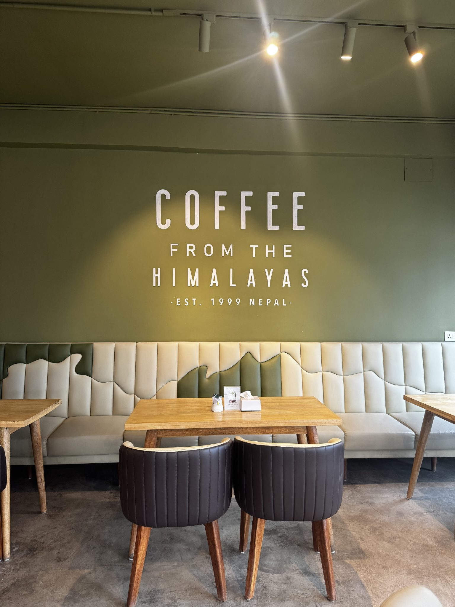
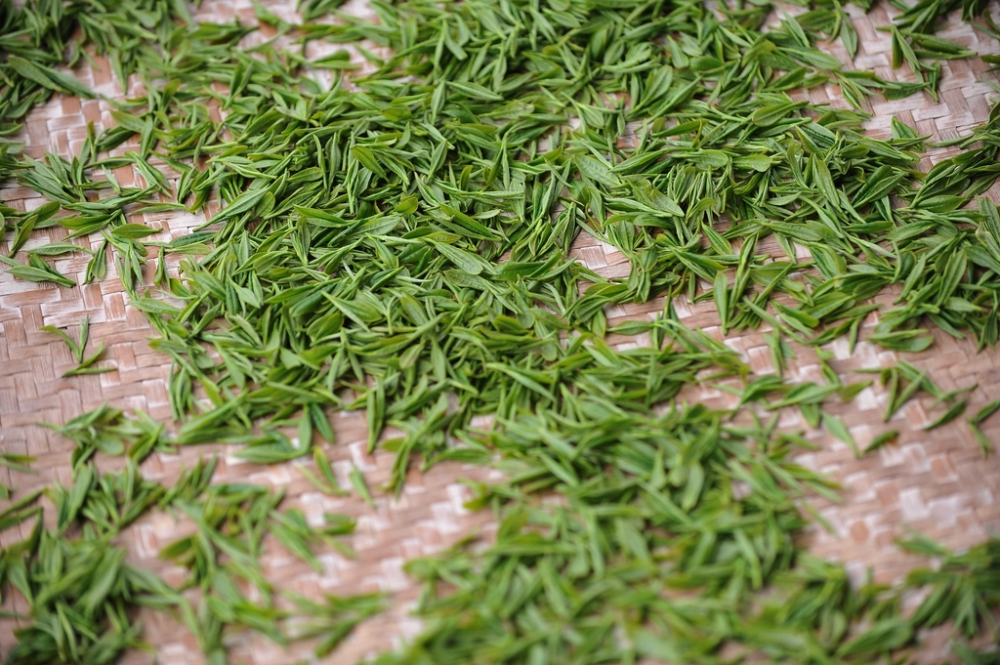
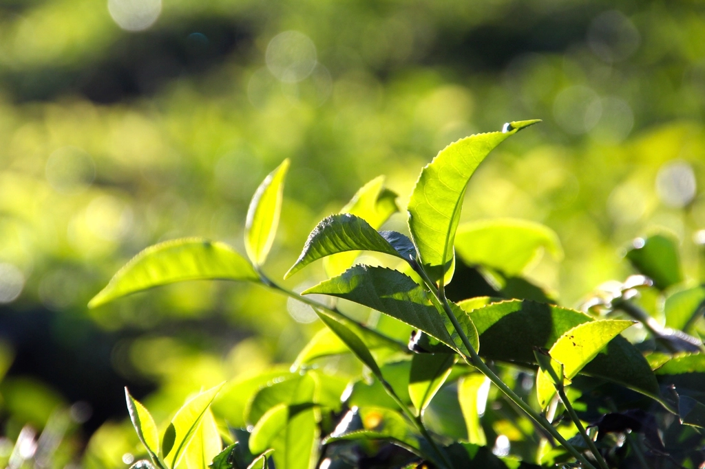

ABOUT
ABOUT / こだわり
宇治の、暮らしのそばで
宇治といえば、平等院やお茶処としての賑わいを思い浮かべる方が多いかもしれません。けれど私たちが店を構えたのは、そこから少し離れた小倉町天王、住宅と田んぼがゆったりと隣り合う場所でした。
観光の目的地としてではなく、近くに暮らす方にとっての「ひと息つける場所」でありたい。そんな思いから、派手な演出や慌ただしさとは距離を置き、静けさを大切にする店づくりを続けています。
宇治という土地に根を下ろす一軒として、お茶への敬意は忘れずに、けれど構えすぎず。訪れてくださる方が、ご自身のペースでゆっくり過ごせる時間をお届けできればと考えています。

お茶の産地だからこそ、丁寧に
宇治は、古くからお茶の産地として知られてきた土地です。当店でも、その土地柄に恥じないよう、お茶を使ったドリンクには一杯ごとに手間をかけています。産地であることを声高にアピールするのではなく、日々の一杯の丁寧さで感じていただけたらと思っています。
メニューの詳しい内容や取り扱いにつきましては、お電話またはInstagramにてお気軽にお問い合わせください。

ひとりの時間も、誰かとの時間も
窓の外に広がる緑を眺めながら、ひとりで本を開く時間も、家族や友人とゆっくり言葉を交わす時間も。どちらも大切にできる空間でありたいと考えています。
店内の設備（Wi-Fi・電源など）についてご希望がございましたら、事前にお電話にてご確認いただけますと幸いです。
